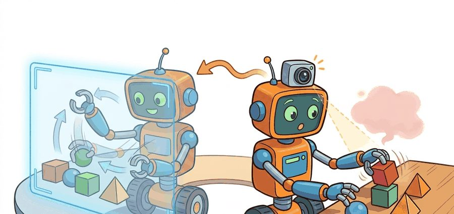
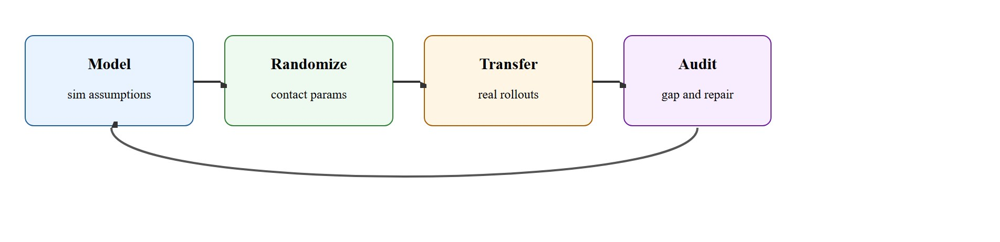
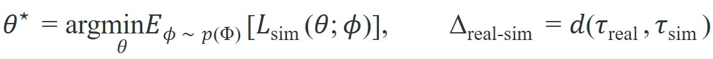

"Dexterity in simulation becomes interesting only after hardware disagrees."
A Sim-to-Real Transfer Diary

This section assumes familiarity with domain randomization introduced in section 13.2 and with contact dynamics from section 6.3. The transfer audit loop developed here is extended in section 44.2, where tactile sensing adds a new channel of sim-to-real mismatch, and the evidence-culture practices recur in Part IV alongside the broader sim-to-real RL framework of section 20.5.
A robot hand that faultlessly unscrews a bottle cap in simulation drops it on the first real attempt, because the 0.3 ms actuator delay and the true fingertip compliance were never in the model. Sim-to-real for dexterity is typically regarded as one of the hardest transfer problems in embodied AI: contact physics is so sensitive that a single unmodeled friction coefficient can cascade into a completely different grasp sequence. The transfer audit ledger, the stress-testing of hidden simulator assumptions against real contact traces, and the systematic repair loop that separates robots performing in the lab from those performing in the world are the core tools developed in this section.
Picture a robot hand that reorients a Rubik's cube flawlessly ten thousand times in simulation, then fumbles it on the very first real grasp: the culprit is not a bug but eight milliseconds of tendon lag and a fingertip that squishes two millimeters more than the model believed. A Shadow Dexterous Hand running an in-sim grasp policy still misses on real hardware because its 24 tendon-driven joints add 8 to 14 ms of actuation lag, its elastomer fingertips deform several millimeters under load, and its tactile sensors return noisy contact normals, none of which the nominal MuJoCo model contained. Each of these mismatches (actuator delay, fingertip compliance, tactile noise, contact-model error) must be measured and represented explicitly, not assumed away.
Dexterous transfer ties learning back to sensing, simulation, and deployment. The result is a transfer ledger, in the spirit of the OpenAI Dactyl post-mortems, that records which simulator assumptions survived contact with the Shadow Hand and which collapsed at the first real rollout.
Dexterous sim-to-real does not fail only because the simulator is imperfect. It fails because contact behavior is so sensitive that small mismatches in delay, friction, or compliance can change the entire contact sequence.

Figure 43.5.1 traces the loop this section develops: model the simulator assumptions, randomize the contact parameters, transfer to real rollouts, then audit the gap and repair the model family. The simulator serves as a proposal generator for contact strategies, not as an oracle. Transfer succeeds when the policy has seen enough variability to survive the small but decisive differences between simulated and real fingertips, objects, and timing. The concept of simulation fidelity across physical, visual, and behavioral dimensions determines which differences are tolerable.
For dexterity, the critical gaps are rarely about image realism. They are about contact realism: friction, compliance, and latency at the fingertip level, including friction coefficients, local compliance, sensor latency, finger backlash, and object inertial mismatch.
The tool used throughout this section to close those gaps is domain randomization: training the policy across a distribution of physics parameter values (friction, delay, compliance) rather than a single fixed value, so the learned strategy tolerates whichever value hardware turns out to have (introduced in section 13.2 and formalized below). Consider a concrete example. A policy trained at a fixed friction value of 0.8 achieves roughly 75% success in sim. On hardware, actual fingertip friction ranges from 0.5 to 1.2 depending on surface wear, and that same policy drops below 30%. Randomizing friction across its real range closes most of that gap without any other change. In practice, teams that skip randomization often report needing tens of thousands of real hardware episodes to tune a contact policy by trial and error, whereas a sim-trained policy with proper friction randomization has been reported to transfer in a few hundred real rollouts; exact counts vary by task and hardware. Contact realism therefore dominates the sim-to-real failure budget for hands. Fingertip compliance compounds the problem. Real elastomer pads deform under load, so the effective contact point shifts by several millimeters and the contact patch spreads. This changes the torque balance (the balance of rotational forces the fingers exert around the grasped object; a stable grasp is one where these torques cancel and the object stays put) and often flips a grasp from stable to unstable.
So far: fixed simulator parameters fail because real friction varies (randomization closes that gap), and fingertip compliance shifts the contact point enough to flip a grasp from stable to unstable, so both quantities need to be measured on hardware, not assumed.
Teams incorporate compliance by measuring the stiffness-displacement curve offline (a force gauge and a micrometer suffice), then parameterizing that curve inside the simulator or adding a contact-normal perturbation proportional to applied force.
The two expressions below formalize this idea. The left equation says the trained policy parameters $\theta^\star$ minimize the expected simulation loss averaged over a distribution $p(\Phi)$ of randomized physics parameters $\phi$ (friction, delay, compliance), rather than over a single nominal setting. The right equation defines the transfer gap $\Delta_{\text{real-sim}}$ as a distance $d$ between a real trace $\tau_{\text{real}}$ and its simulated counterpart $\tau_{\text{sim}}$, which is exactly the quantity the audit ledger records.

Before reading the next paragraph, ask yourself: if your simulator's friction value is off by just 0.3, how badly do you expect real-world performance to drop?
To turn this diagnosis into practice, the transfer audit ledger itself has a concrete anatomy: for each rollout, record the randomization ranges used in training (friction, delay, compliance, sensor noise), the sim success and slip rate under those ranges, the matched real-hardware success and slip rate, the size of each gap, and the control step at which the real and simulated traces first diverge. The Worked Example and Step-Through below fill in exactly these fields for one cube-reorientation rollout, so you can copy that row structure directly into your own project's ledger.
Consider a specific case. The OpenAI Dactyl system (Andrychowicz et al., 2019) trained a Shadow Dexterous Hand to reorient a Rubik's cube using only simulation, then transferred to hardware. The key enabling move was not visual realism but aggressive domain randomization over 100-plus physics parameters. These included fingertip friction (0.5 to 1.5), actuator delay (0 to 20 ms added latency), and object mass scaling (0.5x to 2x nominal). Even so, the policy failed on real hardware in a substantial fraction of orientations where the sim had near-perfect performance. The failure signatures were reported to trace primarily to under-randomized joint backlash rather than anything visual. The lesson: the parameter ranges that matter are the ones tied to the specific contact transitions your task requires, not a uniform sweep over all parameters.
Think of seasoning a dish by cooking with many batches of salt, each batch slightly different in grind coarseness and brand. A chef who has only ever cooked with one precise brand will produce food that tastes wrong the moment a different salt is used in service. A chef who trained across many salts builds intuitions about seasoning that survive any reasonable substitute. Domain randomization works the same way: exposing the policy to a spread of friction and delay values during training is not about covering every possible future, it is about building contact strategies that do not collapse the moment the real world differs by a small but decisive amount from any single simulator setting.
The team fits or randomizes a family of simulator parameters, trains a dexterous policy across that family, and then compares simulator and hardware traces for the same task panel. The transfer artifact should include the parameter ranges and the first real-world failure signatures.
# Record one sim-to-real gap summary for a dexterous task.
sim = {"slip_rate": 0.08, "success": 0.81}
real = {"slip_rate": 0.19, "success": 0.62}
gap = {
"slip_gap": round(real["slip_rate"] - sim["slip_rate"], 2),
"success_gap": round(sim["success"] - real["success"], 2),
}
print(gap)Trace the ledger algorithm with one concrete cube-reorientation rollout. Step 1 (identify ranges): hardware measurement gives fingertip friction in [0.5, 1.2], actuator delay of 11 ms, compliance of 3 mm at 5 N. Step 2 (train family): randomize friction over [0.5, 1.2] and delay over [8, 18] ms (anchored to the 11 ms measurement). The policy reaches sim success = 0.81 and sim slip_rate = 0.08. Step 3 (run hardware pilot): 50 guarded real rollouts give real success = 0.62 and real slip_rate = 0.19, so success_gap = 0.81 - 0.62 = 0.19 and slip_gap = 0.19 - 0.08 = 0.11. Step 4 (find earliest divergence and repair): the per-step trace shows force diverging at control step 3 (about 30 ms in), before any pose error, pointing at residual actuator lag; the repair is to widen the delay window and add the inference-time delay-correction model, not to touch friction. The ledger row reads {friction: [0.5,1.2], delay: 11 ms, slip_gap: 0.11, success_gap: 0.19, first_divergence: force@step3}.
Expected output: Real hardware slips more and succeeds less than simulation, which points to a contact mismatch rather than a visual one.
MuJoCo, ManiSkill (a GPU-parallelized benchmark and simulator suite for robotic manipulation), and tactile simulators help produce transfer-ready rollouts, but successful dexterous transfer still depends on careful real-trace comparison and guarded hardware deployment.
When encoding measured actuator delay in MuJoCo, set actuator_dynprm[0] (the first-order time constant) to your measured hardware value in seconds rather than leaving it at the default zero. A common mistake is randomizing a wide delay range without first anchoring the center of that range to a real measurement: if your servo has a consistent 12 ms lag, start the randomization window at roughly 8 to 18 ms rather than 0 to 20 ms, or the policy will waste capacity learning to cope with near-zero delays that never appear on hardware. A one-time step-response test with a current sensor and a logged timestamp costs under five minutes and halves the effective randomization budget needed to cover real deployment.
Randomization can become a ritual. If the parameter family does not cover the real mismatch that matters, more randomization only hides the blind spot behind extra compute.
A common assumption is that a policy achieving high success rates in simulation will transfer to real hardware with only a modest performance drop. In dexterous manipulation this assumption is systematically wrong: contact physics is so sensitive to unmodeled fingertip compliance, actuator delay, and friction variation that a policy performing at 80% in simulation can fall below 30% on the first hardware trial, with failures concentrated in contact transitions the simulator never produced. The correct mental model is that simulation success is close to a necessary condition for hardware transfer (a policy that fails in sim will not succeed on hardware either) but a weak predictor of the transferred success rate, because the size of the drop depends on unmodeled gaps that sim performance alone does not reveal. Sim performance tells you the policy has learned a viable contact strategy under the modeled physics; real-trace auditing tells you whether that strategy survives the physical gaps that no simulator fully captures.
In the OpenAI Dactyl system, the Shadow Hand's 24 tendon-driven joints produced a consistent 8 to 14 ms actuation lag that was absent from the MuJoCo model at training time. During cube reorientation, that lag caused the fingertips to apply force 2 to 3 control steps after the policy intended, shifting the contact point by roughly 4 mm on the cube face and triggering an unplanned slip. The fix was not to retrain the whole policy but to add a learned residual delay model at inference time: a small 1-layer Gated Recurrent Unit (GRU) that consumed the last several joint-position readings and output a corrected action offset, substantially reducing real-world failure on the hardest orientations without any simulator change (illustrative architecture; specific numbers vary across reported configurations).
NVIDIA's Isaac Lab pipeline for robotic peg-and-connector insertion trains contact policies entirely in simulation with friction, clearance, and actuator-delay randomization, then transfers to physical arms on factory cells. The deployed systems audit each real insertion against simulated force traces, exactly the gap-ledger discipline of this section, so a failed insertion tightens the next randomization round instead of stalling the line.
A simulator that always agrees with your policy might just be a very supportive fiction writer.
Direction 1: Foundation models for contact-aware transfer. Large vision-language-action models are being fine-tuned directly on wrist-camera and tactile streams, reducing the need for hand-crafted simulator parameter families. Google DeepMind's ALOHA 2 work (2024) showed that a transformer pre-trained on cross-embodiment data can close a large fraction of the sim-to-real gap in dexterous assembly without any explicit randomization schedule.
Direction 2: Learned contact simulators via neural physics. Rather than tuning rigid-body parameters, recent work replaces the contact model itself with a differentiable neural surrogate trained on real contact traces. The PhysDreamer line (2024-2025) and Carnegie Mellon's DiffTaichi-based hand simulators (DiffTaichi is a differentiable physics simulation language that lets gradients flow through contact dynamics, so the simulator itself can be tuned by backpropagation) demonstrate that a learned contact model trained on a few hundred real grasps can generalize to new objects better than a randomized analytical model.
Direction 3: Tactile-driven online sim parameter identification. Tactile sensors are now used not only as a control signal but as a real-time system-identification channel: the sensor readout during the first contact milliseconds is matched against a library of simulated contact signatures to identify friction and compliance on the fly and update the policy's internal model. Berkeley's work on GelSight-guided (GelSight is a camera-based tactile sensor that images the deformation of a soft gel pad pressed against an object, giving a high-resolution contact map instead of a single force reading) adaptive randomization (2024) is a representative example.
Open problem for a PhD student: Current online identification methods work well for single-contact grasps but break down when multiple fingertips contact an object simultaneously, because the individual contact signatures are entangled in the sensor readings. A tractable dissertation problem is a disentanglement architecture that attributes each tactile sensor's signal to one contact site, enabling per-finger parameter updates during a grasp without full re-identification from scratch.
Could you name the top three contact parameters whose mismatch would most damage your hardware result?
Once you can name those three most-damaging parameters, the deeper design principle behind the whole audit loop comes into focus. Sim-to-real for dexterity makes the case for parameter families rather than single best-fit models with unusual clarity. Contact behavior lives in ranges, and robust policies must survive those ranges rather than memorize a single simulator setting.
It is also where careful evidence culture pays off. A side-by-side trace of sim and real force, slip, and orientation can explain more than a hundred aggregate benchmark points.
| Tool or Library | Role in the Topic | Builder Advice |
|---|---|---|
| MuJoCo | Dexterous transfer simulation | Use it for fast contact rollouts and parameter sweeps. |
| TACTO or tactile simulators | Touch-channel modeling | Helpful when tactile cues drive contact transitions or slip detection. |
| Hardware transfer ledger | Mismatch auditing | Record slip, timing, and success gaps for each transfer round. |
Train a toy dexterous policy in simulation under three friction settings, then evaluate a held-out friction value and explain how the transfer gap should be recorded.
Recording the gap is only the first move; the ledger earns its keep when it tells you where to look once a transfer actually breaks. When transfer fails, first check which trace diverged earliest: pose, force, slip, or timing. The earliest divergence is usually the most actionable one.
Not all sim-to-real gaps are equal in severity. A gap is typically recoverable when it affects a single contact parameter (such as friction coefficient or sensor delay) that can be measured on hardware and added to the randomization range in a follow-up training round. A gap becomes difficult to recover from when it reflects a missing contact mode entirely: for example, if the simulator never modeled fingertip deformation under lateral load, no amount of friction randomization compensates, because the contact geometry itself is wrong. The diagnostic signal is whether widening the existing parameter ranges ever reproduces the failure mode in simulation. If it does not, the model family needs a structural change, not more randomization.
Beginner (weekend): Build a transfer gap logger in MuJoCo using Gymnasium (the standard Python library for defining reinforcement-learning environments and reward interfaces): train a simple finger-push policy under three fixed friction values, evaluate on a held-out value, and print a slip-rate and success-rate gap table. The key challenge is instrumenting MuJoCo contact forces so slip events are counted consistently across friction conditions.
Intermediate (1 to 2 weeks): Implement actuator delay randomization in Isaac Lab for a two-finger pinch task, measure the sim-to-real gap by comparing simulated joint traces against logged real-robot joint traces from a low-cost servo gripper connected via ROS2 (Robot Operating System 2, the standard middleware for passing sensor and control messages between robot processes), and reduce the gap by anchoring delay randomization to a measured step-response value. The key challenge is aligning the timestamp streams between the Isaac Lab rollout logs and the ROS2 topic recordings so the trace comparison is valid.
Intermediate-plus (2 weeks): Use LeRobot (Hugging Face's open toolkit for collecting and training on real-robot demonstration data) to collect 50 real demonstrations of a peg-insertion task, mirror the task in PyBullet (an open-source physics simulator commonly used for robotic manipulation research) with domain randomization over peg clearance and fingertip friction, train a policy in sim, and report the success gap versus the demonstration-only baseline. The key challenge is defining a consistent success criterion that can be evaluated identically in PyBullet and on the real robot.
Widely used simulator for dexterous control and transfer studies.
Open-source simulator for high-resolution vision-based tactile sensing.
Open tactile reinforcement learning (RL) environments useful for sim-to-real studies.
Dexterous sim-to-real succeeds by auditing contact mismatches explicitly and training across the parameter ranges that actually matter on hardware.
Write a transfer ledger template for a dexterous task with fields for friction, delay, tactile noise, success, slip, and first divergence time.
Continue to Chapter 44: Tactile and Visuo-Tactile Learning, where this contract becomes the input to the next embodied capability.